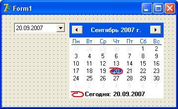

Логические операнды
В условных проверках, таких как if, while или repeat часто бывает недостаточным проверять только одно условие.
Можно воспользоваться вложением проверок, как в приведенной в примере конструкции:
if a > 0 then
if b <> a then begin
команда 1;
команда 2;
end; //if 2
В этом коде мы проверяем, правда ли a больше нуля.
Если да, то проверяем, не равно ли b и a.
И только в том случае, если второе условие также вернет Истину, выполнятся указанные команды.
Таких вложений может быть сколько угодно, и ими нередко пользуются.
Есть и другой способ множественных проверок.
Для того, чтобы можно было проверять более одного условия, существуют логические операторы AND, OR и NOT.
Поскольку эти операторы имеют наивысший приоритет в вычислениях, условия необходимо заключать в скобки.
Оператор AND (И) проверяет два условия, и возвращает истину только в том случае, если оба условия вернут истину.
Взгляните на предыдущий пример, и посмотрите, как его можно написать с оператором AND:
if (a > 0) and (b <> a) then begin
команда 1;
команда 2;
end; //if
Оператор OR (Или) возвращает истину в том случае, если хотя бы одно из условий вернет истину:
if (3 > 5) or (5 > 4) then... //результат – истина, так как 5 больше 4
Оператор OR проверяет вначале левое значение.
Если оно истинно, то OR не будет делать дальнейших проверок, и сразу вернет истину.
Если левое значение ложное, то OR проверяет правое значение.
В данном случае, если правое значение вернет истину, то и OR вернет истину, в противном случае OR вернет ложь.
Оператор NOT (Не) вернет истину только в том случае, если значение есть ложь.
Фактически, это оператор – перевертыш.
Если общее значение будет истинно, он возвращает ложь, а если ложно – то истину.
Поэтому очень часто его используют в коде, чтобы поменять какое либо логическое свойство объектов на противоположное, например:
Button1.Enabled := not Button1.Enabled; Edit1.Visible := not Edit1.Visible;
В этих примерах берется значение свойств объектов.
Если это свойство истинно, то оператор not возвращает ложь, и этому свойству присваивается ложь.
И наоборот, если свойство ложно, not заставляет его принять истинное значение.
Очень удобно, когда вы не знаете заранее, что именно в свойстве хранится, истина или ложь, но при этом нужно присвоить свойству противоположное значение.
Кроме того, оператор NOT часто применяют в проверках, если нужно выполнить какой-то код в том случае, если условие ложно:
if not Edit1.Text = Label1.Caption then...
То есть, условие выполнится лишь в том случае, если тексты в Edit1 и в Label1 разные.
Обратите внимание, в приведенном примере скобок нет.
Ведь условная проверка у нас одна, поэтому скобок не требуется, хотя если Вы их поставите, это тоже не будет ошибкой.
Оператор Not применяется очень часто, поэтому запомните его.
Преобразование даты
До сих пор мы еще не сталкивались с типом данных Дата.
Тем не менее, этот тип очень широко используется в программировании.
В Delphi он называется TDateTime, то есть, возвращает одновременно и дату, и время.
Из-за такой его универсальности часто приходится применять функции преобразования, чтобы вернуть только дату, или только время, причем в разных форматах.
Date()
Эта функция возвращает текущие дату и время в формате TDateTime.
Ее можно применять с другими функциями, задавая им в качестве параметра текущую дату.
Пример:
DateToStr(Date());
DateToStr()
Возвращает указанную в параметре дату в виде строки.
Например,
ShowMessage(DateToStr(Date()));
выведет сообщение с текущей датой в виде строки.
Создайте новое приложение, установите на форму кнопку и в обработчике нажатия укажите эту строку.
Скомпилируйте и посмотрите результат.
StrToDate()
Эта функция напротив, принимает в качестве параметра строку, в которой записали дату в правильном формате, и возвращает эту дату в виде TDateTime.
Сложность заключается в том, что форматов для предоставления даты может быть много.
У нас, например, принято вначале указывать день, потом месяц, и в конце год.
А американцы первым указывают месяц, затем число и год.
Причем год может быть как 4-х символьным (2007), так и 2-х символьным (07).
Еще проблема с разделителями. Разделителем может служить и точка (20.09.2007), и знак слэш (20/09/2007).
Правильную настройку можно увидеть в окне Панель управления – Язык и региональные стандарты.
Кроме того, пример
ShowMessage(DateToStr(Date()));
также вернет вам дату в виде строки в правильном формате.
Если же вы желаете использовать эти функции для программ на продажу, и не знаете, какие настройки на компьютере покупателя, то придется использовать неявные глобальные переменные.
Переменная DateSeparator содержит символ – разделитель дат.
Порядок следования дня, месяца и года определяется глобальной переменной ShortDateFormat.
Возможны следующие комбинации: месяц/день/год, день/месяц/год и год/месяц/день.
Например:
procedure TForm1.Button1Click(Sender: TObject); begin DateSeparator := '-'; ShortDateFormat := 'm/d/yyyy'; Label1.Caption := DateToStr(Date); end;
Здесь мы не просто смотрим значение DateSeparator и ShortDateFormat, а присваиваем им новое значение.
В дальнейшем, вывод дат будет осуществляться уже по новым правилам.
Так, для даты 15.09.1994 в свойство Caption компонента Label1 будет записан текст "9-15-1994".
Если бы мы указали
ShortDateFormat := 'mm/dd/yyyy';
То выводимые месяц и день были бы с нулями, если они меньше 10: "09-15-1994"
FormatDateTime()
Эта функция возвращает дату и время в виде строки в указанном формате.
Очень интересная функция, чаще всего используют именно ее, чтобы вывести строку нужного формата.
У функции есть два параметра, первым указывается формат строки, в котором нужно вернуть дату.
Второй параметр – переменная типа TDateTime, которую нужно преобразовать в строку.
В качестве второго параметра также можно использовать функцию Date(), если требуется преобразовать текущие дату и время.
Эту функцию можно сравнить с функцией FormatFloat(), которую мы изучали ранее.
Самое интересное в этой функции – формат строки, или маска.
Он может содержать следующие символы:
d – показать день, не подставляя нули в начале: 1, 2, 12
dd – показать день с подстановкой нулей в начале: 01, 02, 12
ddd – показать день недели в коротком формате: Пн, Вт, Ср
dddd – показать полный день недели: Понедельник, Вторник, Среда
m – показать месяц без нулей: 1, 2, 10
mm – показать месяц с нулями: 01, 02, 10
mmm – показать короткое название месяца: Янв, Фев
mmmm – показать полное название месяца: Январь, Февраль
yy – показать короткий год: 07, 98, 00
yyyy – показать полный год: 2007, 1998, 2000
h – показать часы, не добавляя нулей: 3, 5, 12
hh – показать часы с нулями: 03, 05, 12
n – минуты без нулей: 3, 5, 12
nn – минуты с нулями: 03, 05, 12
s – секунды без нуля впереди: 3, 7, 30
ss – секунды с нулями: 03, 07, 30
Это практически полный набор форматов, которые вам могут пригодиться.
Примеры использования:
ShowMessage (FormatDateTime('Сегодня dddd dd mmm yyyy г.', Date));
//Результат: Сегодня Среда 06 Фев 2008 г.
ShowMessage (FormatDateTime('Сегодня dd.mm.yyyy г.', Date));
//Результат: Сегодня 06.02.2008 г.
Обратите внимание, что после функции Date не указаны скобки.
Это не ошибка.
Если у функции нет параметров, ее можно указывать и без скобок.
Время можно указывать с разделителями:
ShowMessage(FormatDateTime('Текущее время: hh:nn:ss', Time));
//Результат: Текущее время: 05:28:15
Компоненты для ввода дат
В программах очень часто требуется предоставить пользователю возможность ввести дату.
Но мы знаем о проблемах, которые могут возникнуть, вдруг даты идут в формате mm/dd/yy, а пользователь наберет 15.08.2008?
Получится ошибка.
Чтобы облегчить пользователю ввод дат, существует несколько компонентов.
Создайте новый проект, установите на форму компоненты DateTimePicker и MonthCalendar с вкладки Win32 в Палитре компонентов.
Скомпилируйте проект и посмотрите, как он работает:
Обратите внимание на то, как работают эти календари.
Если вы щелкните мышью по номеру года, то откроется окошко, в котором год можно прокрутить до нужного.
Если щелкните по месяцу, то откроется список месяцев, в котором пользователь может выбрать нужный.
А если он щелкнет по дню, то в свойстве Date обоих компонентов установится выбранная дата в формате TDateTime.
Эту дату затем можно преобразовывать в функциях преобразования дат в строку, подставляя это свойство в качестве значений.
Еще обратите внимание на нижнюю строку.
Там указана текущая дата, а слева от нее красный овал.
Если щелкнуть по нему, то выбранная дата перескочит с любой даты на текущую.
А у компонента DateTimePicker есть еще интересное свойство: DateFormat.
Оно может выводить дату в коротком или в длинном формате.
Свойство Time этого компонента показывает время в формате TDateTime.
Эти компоненты удобно устанавливать на форму, чтобы пользователь вместо ввода нужной даты просто выбрал ее на форме.
Кроме того, такой подход обеспечит вам гарантию того, что дата будет указана в нужном формате.
Самостоятельное задание
Создайте новое приложение.
Установите на форму компоненты DateTimePicker, Memo и кнопку, чтобы добавлять в Memo1 строки.
Вначале добавьте строку с текущей датой в формате, принятом в русских версиях Windows (функция DateToStr(Date)).
Затем добавьте пустую строку, чтобы отделить ее от выводимых далее форматов.
Затем придумайте 10 разных форматов для функции FormatDateTime(), и поочередно добавьте их в Memo1 с той датой, которая указана в DateTimePicker1.
Кстати, чтобы не писать длинные названия, вроде
DateTimePicker1.Date
переименуйте компонент (свойство Name ) в более короткое имя, например, DTP1, тогда обращение получится короче:
DTP1.Date